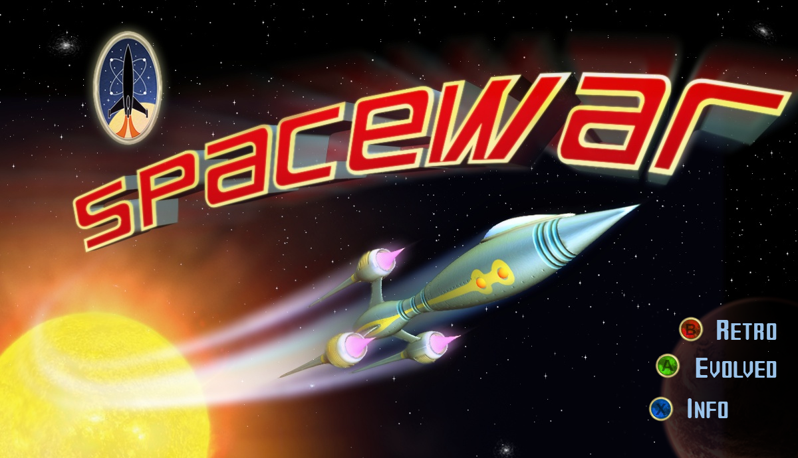

Spacewar
Ported from Microsoft's XNA Spacewar Starter Kit.
Source for this sample on GitHub ↗

Play ▸Opens in a new tab. Click the canvas first so it receives keyboard input and starts audio.
About this sample
Spacewar is a two-player starship battle around a dangerous sun. Choose the line-drawn Retro mode or the Evolved mode with textured 3D ships and effects. Destroy the other ship, avoid the sun's gravity, and spend points on weapons between rounds.
The browser build uses the original compiled XNA content and XACT sound banks. Its settings, including controls, are loaded from the original XML document.
Controls
| Action | Player 1 | Player 2 |
|---|---|---|
| Choose Retro / Evolved / Info | G / V / F | End / Home / Page Up |
| Rotate and thrust | A/D and W/S | Arrow keys |
| Fire / hyperspace | V / G | Home / End |
| Start / return to title | Left Ctrl | Right Ctrl |
| Pause / back | Left Shift | Right Shift |